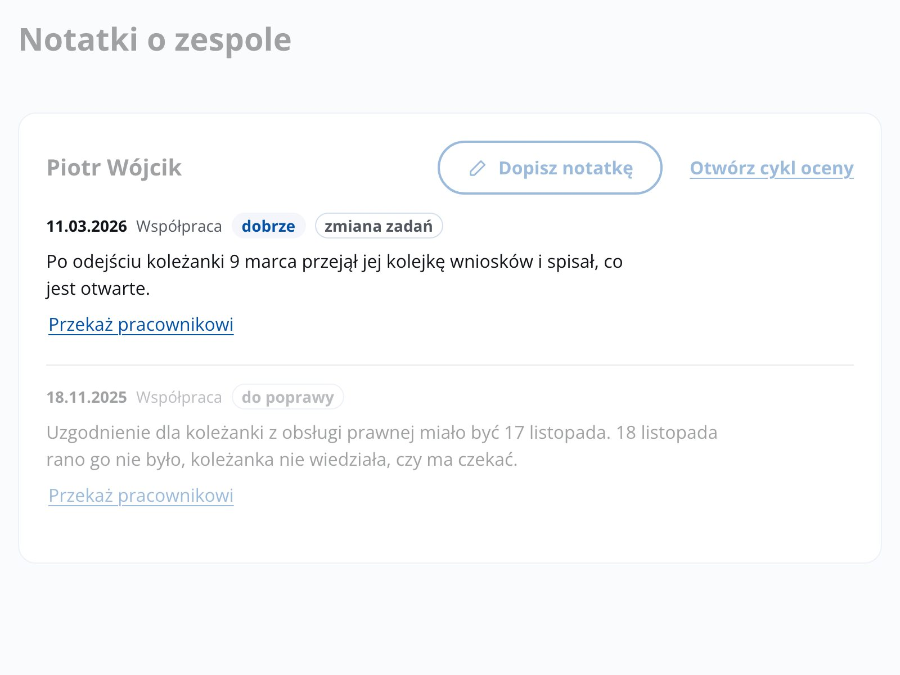
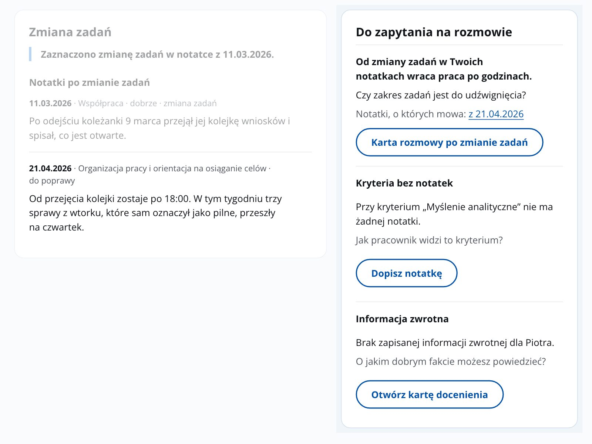
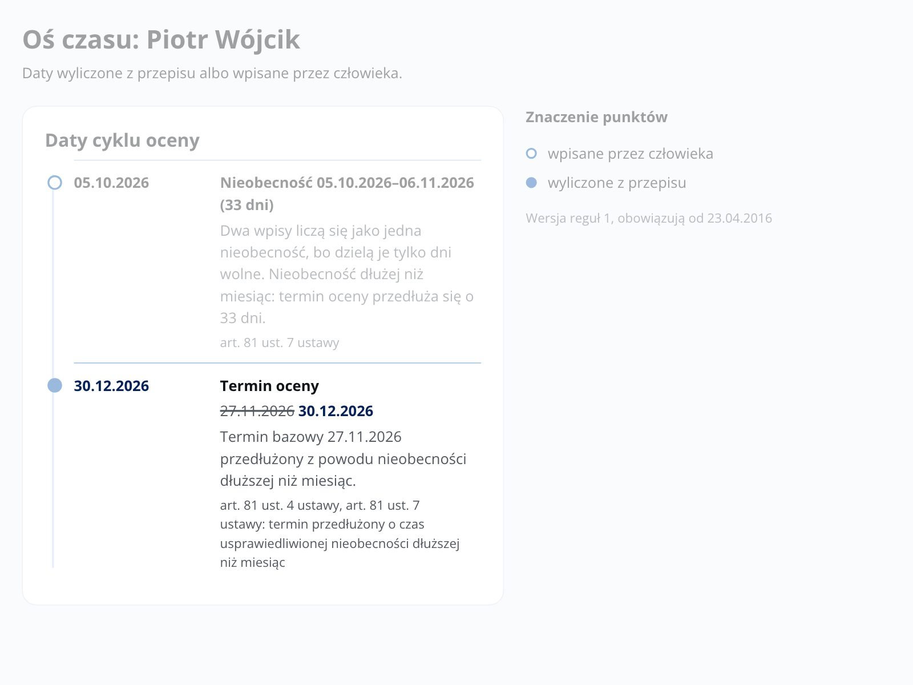
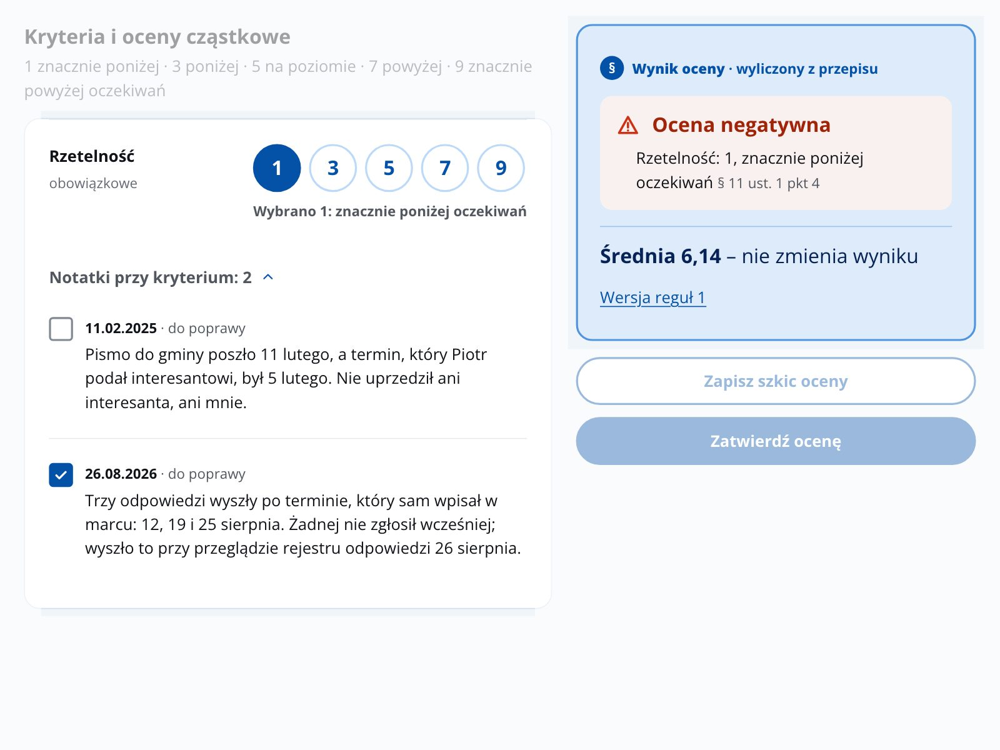
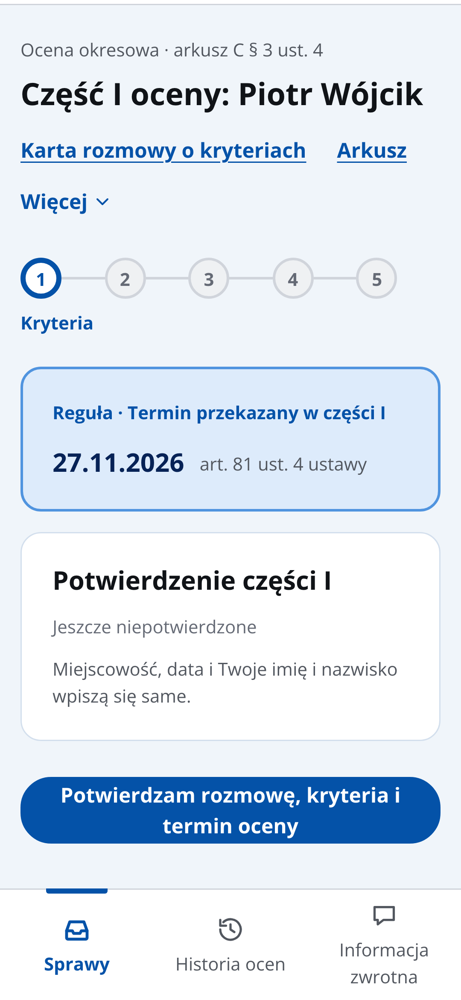
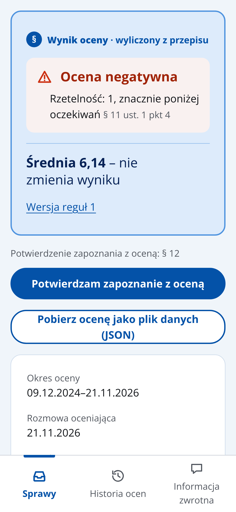
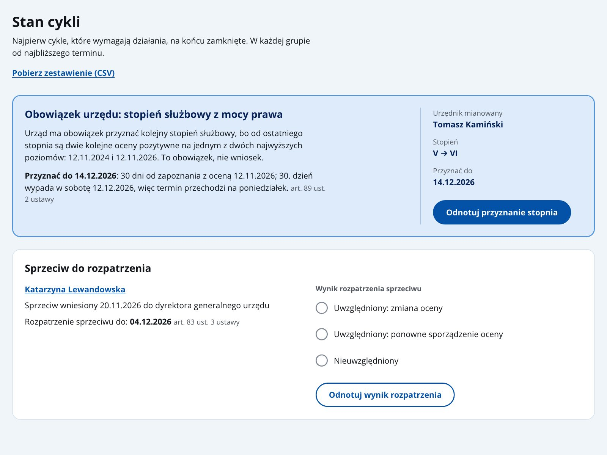

Przełożony ocenia dwa lata pracy. Pamięta ostatnie tygodnie.
mOcena prowadzi ocenę okresową w służbie cywilnej od pierwszego dnia okresu: zbiera fakty wtedy, gdy się dzieją, i liczy terminy z przepisu.
„Wystarczy przenieść arkusz oceny do komputera.”
Arkusz w komputerze też wypełnia się z pamięci. A pamięć zaczyna się w listopadzie.
Marek, przełożony, zapisał przez dwa lata dziewięć faktów o pracy Piotra. Tylko jeden jest z ostatniego miesiąca. Bez ośmiu pozostałych oceniałby to, co pamięta z listopada 2026.
Kłopot nie leży w formularzu. Leży w pamięci.
Czego urząd użyje zamiast
Nasza propozycja
Arkusz w edytorze tekstui kalendarz kadr
- brak kosztu wdrożenia
- faktów z 24 miesięcy
- przypomnień
- terminu po nieobecności
Formularz elektroniczny
- arkusz bez papieru
- niczego przed dniem oceny
- rozmowy i notatki zostają poza systemem
Model, który pisze ocenę
- tekst w minutę
- faktów, których przełożony nie zapisał
- może dopisać fakt, którego nie było
mOcena
- fakty zapisane przez przełożonego przez cały okres
- terminy i wynik liczone z przepisu
- gotowego tekstu oceny
Ocenę i uzasadnienie pisze przełożony.
Jedna ocena od początku do końca: trzy osoby, pięć kroków
Kryteria i oczekiwania
Marek ustala kryteria na rozmowie, Piotr potwierdza je na swoim koncie.
Notatka o fakcie
Zapisuje, że Piotr przejął nowe zadania. System pyta: „To stała zmiana zadań?”
Dwie nieobecności
Termin oceny przesuwa się z 27.11.2026 na 30.12.2026.
Rozmowa i ocena
Punkty klika Marek. Wynik liczy reguła z rozporządzenia.
Zapoznanie z oceną
Potwierdza zapoznanie. Od tego dnia biegnie 7 dni na sprzeciw.
Okres oceny: 09.12.2024 – 21.11.2026
Fakt zapisany w dniu, w którym się zdarzył
- 11.03.2026: Piotr przejął kolejkę wniosków.Marek zapisuje to jednym zdaniem, z datą i kryterium.
- Notatka dostaje oznaczenie „zmiana zadań”.Od tej chwili mOcena wie, o co zapytać przed rozmową.
- Po dwóch latachnotatki z całego okresu leżą przy kryteriach oceny.

Wirtualny HR partner pyta, zanim zrobi się problem
- Łączy dwa wpisy Marka:zmianę zadań z 11.03.2026 i pracę po godzinach z 21.04.2026.
- Podsuwa pytanie na rozmowę:czy zakres zadań jest do udźwignięcia.
- Pokazuje, czego brakuje:kryteria bez żadnej notatki i dobrą pracę, o której Piotr jeszcze nie usłyszał.

Termin liczy przepis. Kadry wpisują tylko daty
- Joanna wpisuje nieobecność Piotra:05.10.2026–06.11.2026, razem 33 dni.
- Termin oceny przesuwa się sam:z 27.11.2026 na 30.12.2026.
- Przy dacie stoi przepis,z którego wynika. Nikt nie liczy dni na kartce.
art. 81 ust. 4 ustawyart. 81 ust. 7 ustawy

Średnia 6,14. Wynik: ocena negatywna.
Marek stawia jedną „1” przy Rzetelności. mOcena mówi mu przed zatwierdzeniem, że to przesądza o wyniku, i pokazuje przepis. Pod kryterium leżą notatki Marka. Do uzasadnienia trafi ta, którą sam zaznaczył: z 26.08.2026.
§ 11 ust. 1 pkt 4 rozporządzenia§ 11 ust. 3

Podpowiedź porządkuje, nigdy nie ocenia
Prototyp działa bez modelu językowego: na datach, polach i regułach. To wybór, nie brak. Model piszący o człowieku może dopisać fakt, którego nie było.
Urząd, który zechce, podłączy własny model w jednym miejscu. Zakres jego pracy jest zamknięty z góry.
Sześć miejsc na podpowiedź
2 z 6 działają dziś, 4 czekają na model urzędu
Zapis notatki
- dziśWstępnie zaznacza pole „Zmiana zadań pracownika” (lista słów)
- modelOstrzega, że notatka zawiera dane o zdrowiu
- modelPodpowiada kryterium, którego notatka dotyczy
- modelOstrzega, że podobna notatka już jest
Karta rozmowy
- dziśDopasowuje formę rozwoju z katalogu urzędu
Uzasadnienie oceny
- modelWskazuje zbyt trudne zdania, niczego nie przepisuje
Jedno wymienne miejsce w kodzie
Dziś: reguły.
Później: model uruchomiony w urzędzie.
Nazwiska do niego nie trafiają.
Decyduje człowiek
Przełożony przyjmuje albo poprawia jednym kliknięciem.
Każdy ekran działa także bez podpowiedzi.
Piotr od pierwszego dnia wie, z czego będzie oceniany
- 09.12.2024: potwierdza kryteriana swoim koncie, w telefonie.
- W trakcie okresu: dostaje informację zwrotną,gdy Marek przekaże mu swoją notatkę.
- 22.11.2026: czyta ocenę i potwierdza zapoznanie.Od tego dnia biegnie 7 dni na sprzeciw, do 30.11.2026.


Kadry widzą obowiązki urzędu przed terminem
- Stopień służbowy z mocy prawa:przyznać do 14.12.2026.
- Sprzeciw do rozpatrzenia:do 04.12.2026. Kadry odnotowują zmianę oceny albo zlecają drugą ocenę.
- Każda sprawa ma datę i przepis.Termin nie zależy od tego, czy ktoś o nim pamięta.
art. 89 ust. 2 ustawyart. 83 ust. 3 ustawy

28 z 30 czynności z listy organizatora działa. Dwie są uproszczone
Początek cyklu 4
1Przypomnienie o kryteriach
17Zaproszenie na rozmowę o kryteriach
2Wybór kryteriów, rozmowa
3Potwierdzenie kryteriów
W trakcie okresu 3
11Wpisanie nieobecności
29Zastępstwa
10Zmiana oceniającego
Terminy 4
4Przypomnienie o terminie oceny
8Przesunięcie przez nieobecność
16Zmiana terminu przez oceniającego
19Wniosek ocenianego o termin
Ocena 5
18Zaproszenie na rozmowę oceniającą
5Wystawienie oceny
20Wniosek o kolejny stopień
6Potwierdzenie zapoznania
7Fikcja zapoznania
Po ocenie 6
13Podgląd arkusza
14Pobranie arkusza
15Wydruk arkusza
21Zmiana oceny po sprzeciwie
22Ponowna ocena po sprzeciwie
9Obowiązkowy stopień służbowy
Kadry i urząd 8
23Dane pracowników
24Podległość
27Lista pracowników
28Edycja danych
30Usunięcie danych
12Historia ocen
25Archiwizacja
26Statystyki, zestawienia
Granice prototypu i co dochodzi w pilotażu
Dochodzi w pilotażu
- Logowanie urzędudziś konta pokazowe bez hasła
- Połączenie z systemem kadrowym i elektronicznym obiegiem dokumentów
- Wnoszenie sprzeciwu w aplikacjidziś kadry odnotowują wynik rozpatrzenia
- Wysyłka pocztydziś zaproszenie daje plik kalendarza i szkic wiadomości
Uproszczone dziś: 2 z 30 czynności
- Wniosek o kolejny stopień służbowyjest w formularzu oceny i w arkuszu, bez osobnego obiegu
- Archiwizacjaoceny zostają w historii, bez osobnej operacji
Zostaje na stałe
- Ocenę wystawia przełożony, nie system
- Kliknięcie to potwierdzenie w systemiearkusz do akt urząd drukuje
- Każdy urząd ma własną instalację i własne dane
Urząd uruchamia mOcenę u siebie
- Mały i duży urząd tak samo:jeden serwer i przeglądarka, bez płatnych licencji. Pracowników wgrywa się z pliku albo wpisuje ręcznie.
- Zmiana przepisu to nowa wersja regułz datą. Ocena pamięta wersję, w której powstała.
- Pomyłkę poprawia administrator.Arkusz pokazuje, kto poprawił, kiedy, co było i dlaczego.
Sieć urzędu
Serwer urzędu
Dane nie wychodzą poza urząd
Każdy urząd ma własną instalację. Wystarczy jeden serwer i przeglądarka, bez płatnych licencji.
Za dwa lata Marek oceni dwa lata pracy. Nie ostatnie tygodnie.
Następny krok
Jeden departament, najbliższy cykl ocen. Nowe cykle mają notatki od pierwszego dnia, a terminy liczy przepis.
Wersja pokazowa
mocena.pietkiewicz-mikolaj.workers.dev
„Rozpocznij pokaz” prowadzi przez 5 kroków jednej oceny. Działa w chmurze wyłącznie na danych fikcyjnych.